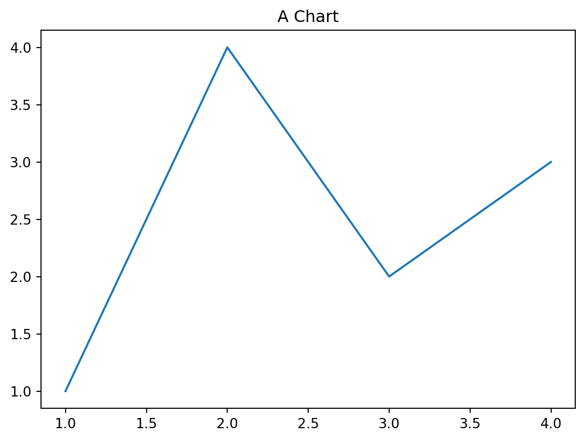

Show/Hide Code
# This is a Quarto code chunk.
# The code inside will be executed!
message = "Hello from Python!"
print(message)Hello from Python!This is the feature that makes Quarto magical. An executable document is a file that weaves together three things: 1. Narrative: Your explanatory text, written in Markdown. 2. Code: Chunks of live, runnable code (in our case, Python). 3. Results: The output of that code (like plots, tables, or text), which is automatically generated and inserted into the final document.
This means your document is not just a description of your work; it is your work. It’s a reproducible record of your analysis that can be easily updated.
A code chunk is just a special kind of Markdown code block. Instead of three backticks, you use three backticks followed by {python}.
Hello from Python!When you render this document, Quarto will run the Python code in the second block and include its output right below it.
You can control exactly how a code chunk behaves using special comments that start with #|. These are like switches that change how Quarto treats the chunk.
#| echo: false (Hiding the Code)This is the most common option you’ll use. It tells Quarto to run the code but not to show the code itself in the final document. This is perfect for when you want to show a plot or a table without cluttering the page with the code that generated it.

#| eval: false (Showing Code Without Running It)This does the opposite. It shows the code block in the document but prevents Quarto from running it. This is useful for writing tutorials (like this one!) where you want to show an example of code without executing it.
#| include: false (Running Code Invisibly)This option tells Quarto to run the code but to include neither the code nor its output in the final document. This is useful for setup code, like loading libraries or data, that your other code chunks need but that your reader doesn’t need to see.
#| cache: true (Making Your Document Faster)As we discussed before, this tells Quarto to save the results of a code chunk after the first time it runs. If the code hasn’t changed, Quarto will reuse the saved results on future renders instead of re-running the code. This is essential for code that takes a long time to run.
Your AI assistant can be a powerful partner for writing and managing code within Quarto.
Scenario 1: You want to generate a plot with specific options. > “You are a Python data visualization expert using the matplotlib library. Write a Python script for a Quarto document that generates a scatter plot of 50 random X and Y points. Make the points blue. Crucially, I only want the plot to appear in the final document, not the code. Please provide the complete, ready-to-paste Quarto code chunk with the correct #| options.”
Scenario 2: You want to debug a failing code chunk. > “My Quarto code chunk is failing. The goal is to print a message. Here is the code: > {python} > message = "Hello" > print(mesage) # Intentionally misspelled > > The error I’m getting is NameError: name 'mesage' is not defined. What does this error mean and how do I fix the code?”
<a href="./01_the_language_of_quarto.qmd" class="nav-button prev">
← Previous: Chapter 1
</a><a href="./03_the_project_workflow.qmd" class="nav-button next">
Next: Chapter 3 →
</a>